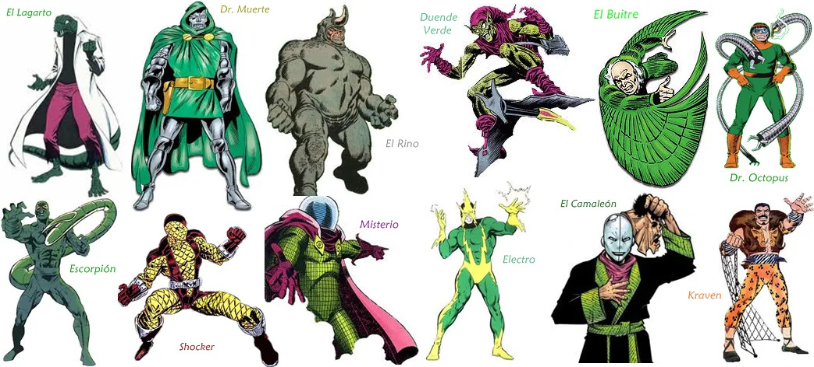
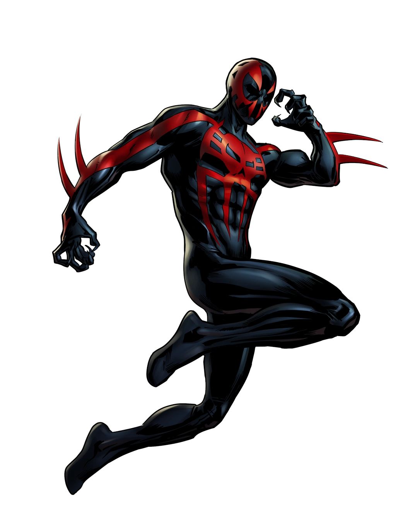
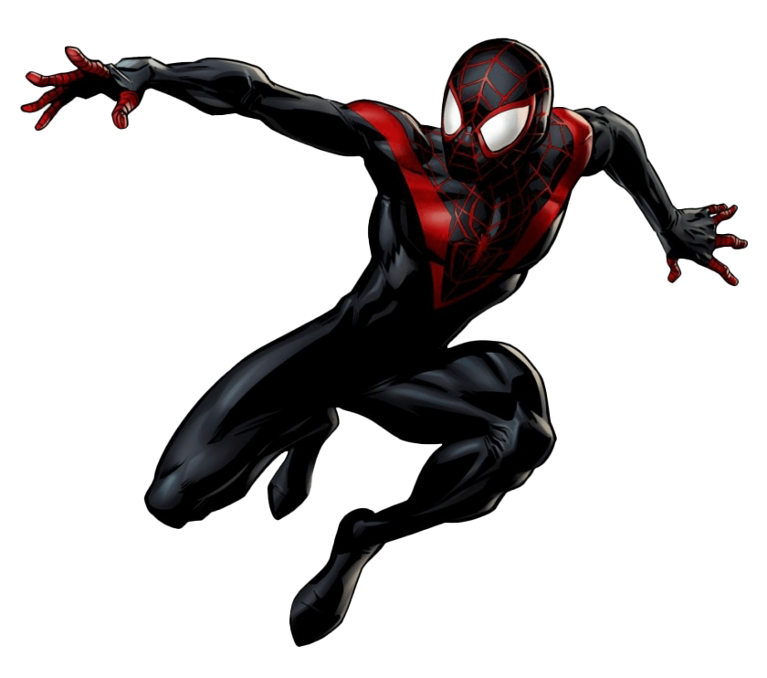
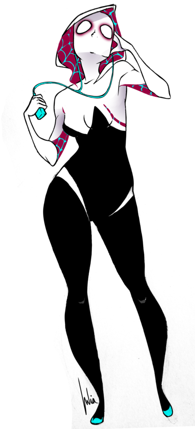

¿QUIÉN ES?
El buen amigo y vecino, Spider-man, es sin duda uno de los personajes más importantes de la historia de los cómics en el mundo. Muestra de ello fue el reciente estudio británico que demostró que este era el superhéroe más popular, ubicándose como el más buscado en Google. Él, Peter Parker ha marcado la vida más de uno, incluso de su creador, Stan Lee.
CREACIÓN
Spider-Man fue creado en 1962 por dos jóvenes que buscaban como incursionar en el mundo de la literatura gráfica. Habiendo dejado su empleo anterior y estando en la naciente Marvel Comics, Stan Lee imaginó que los protagonistas de las viñetas no necesariamente debían ser de personalidades impenetrables o con alter egos perfectos. Así, bajo esa premisa, pensó que una persona normal, es más, medio extraña y con problemas sociales, podría ser una representación para muchos lectores.
¿Con quién podrían identificarse millones de consumidores jóvenes, en plena época de pos guerra y dificultades económicas? Pues sencillo, pensó Lee, con un adolescente.
Sin embargo, la historia debía ser igual de llamativa visualmente, que en cuanto a sus textos. Para esto, el editor buscó un ilustrador que marcara la diferencia, uno capaz de crear justo lo que imaginaba que sería este nuevo ser.
Fue así que encontró en Steve Ditko una alianza invaluable, confiándole la presentación del aspecto del arácnido de Queens.
ALIADOS Y ENEMIGOS
Así, mientras lidiaba con esto, el genio hizo grandes conexiones con personas que, de alguna u otra manera, aportaron a su progreso. Harry Osborne, Mary Jane Watson, Gwen Stacy y otros, hicieron de Peter alguien con gente que lo respaldara.
No obstante, su vida cambió sobremanera cuando lo picó una araña con contenido genético alterado, lo cual, según algunas versiones de su origen, activaron su gen X, dándole habilidades similares a las de una araña. Escalar muros, lanzar telarañas y sentidos aumentados eran algunas de las cualidades de Parker.
Pero… con un poder, vino una gran responsabilidad. Una vez adquirió estos poderes, el mal no demoró hacerle frente en Nueva York y surgieron personajes y grupos malignos que buscaban, a como diera lugar, hacerlo caer. Rhino, Doctor Octopus, Duende Verde, Electro y muchos más, lucharon a muerte con él durante sus historias, hasta hoy.
VERSIONES ALTERNATIVAS
Además de Parker, existen múltiples versiones de Spider-Man cuyos orígenes se remontan a diferentes líneas cronológicas, universos alternativos o intérpretes. Por ejemplo:
Ben Reilly

Ben Reilly fue un clon de Peter Parker creado por el Jackal. Estuvo años alejado de Parker, y supuestamente desaparecido en un autoexilio de cinco años por Nueva York, pero regresó justo cuando el original pasaba un mal momento, con su tía May convaleciente. Colaboró con Parker bajo el nombre de Scarlet Spider. En un giro de los acontecimientos, más adelante, unas pruebas revelaron que Peter era el verdadero clon.
Peter, confuso y con Mary Jane embarazada, le cedió el título de Spider-Man a Ben. La etapa de Reilly como sustituto de Parker, que incluyó la posesión del simbionte Carnage entre otras muchas aventuras, terminó cuando se revelo que Peter no era el verdadero clon, sino Reilly. Fue asesinado por el Duende Verde, artífice de la confusa relación entre Peter y Ben. Su legado de Scarlet Spider llevó a convertirse al bien a su antiguo enemigo, y clon, Kaine.
Años después, Ben fue resucitado y tomó la identidad del Jackal para fundar New U Technologies con el propósito de reanimar a través de la clonación a todas las personas que murieron directa o indirectamente por culpa de Spider-Man.
Miguel O'Hara

Es un joven científico de origen mexicano/irlandés que trabajaba para la corporación Alchemax en un proyecto para crear seres humanos mejorados genéticamente, inspirándose en las habilidades del Spider-Man del siglo XXI. Adopta la identidad secreta de Spider-Man tras obtener accidentalmente poderes sobrehumanos.
Conchata O'Hara, la madre de Miguel, tuvo una relación extramatrimonial con Tyler Stone, el dirigente de Alchemax, sin que su marido George lo descubriera nunca. A causa de ello, Conchata quedó embarazada y trajo al mundo a Miguel como si fuera hijo natural de su matrimonio con George. Unos años más tarde nació Gabriel, el primer y último hijo del matrimonio O'Hara. Miguel pronto demostró poseer un coeficiente intelectual por encima de la norma, por lo que, pese a la oposición de su esposa, George decidió comunicárselo a Stone para que accediera a inscribirlo en una escuela para chicos superdotados. Stone, sabiendo que Miguel era hijo suyo, accedió y el chico ingresó en la escuela que dirigía Angela Daskalakis.
En la escuela conoció a Kron Stone, el hijo de Tyler, y Xina Kwan, una chica de origen chino por quien se sintió atraído. Kron era un chico conflictivo y se la tomó con Miguel desde el primer día en el que lo vio en la escuela arrojándole un cubo de agua encima. Kron siempre buscaba la forma de molestar a Miguel e incluso de hacerle daño. En cierta ocasión mientras Miguel se bañaba solo en la piscina de la escuela, Kron lo hundió por atrás sin que lo viera en el agua. Miguel estuvo a punto de morir ahogado de no ser por Xina, que lo salvó haciéndole la respiración artificial. La culminación de las agresiones de Kron tuvo lugar cuando intentó violar a Xina en la ducha, Miguel se dio cuenta y acudió en su ayuda, pero no era rival para Kron quien casi lo apuñaló de no ser por la intervención de Angela Daskalakis. A raíz de este incidente se hizo un juicio a Kron y se le expulsó de la escuela.
Acabada la escuela, Miguel se convirtió en un experto en ingeniería genética mientras que Xina se aplicó en el campo de la inteligencia artificial. La relación entre ambos continuó y salían juntos como pareja. En cierta ocasión, Gabriel, el hermano de Miguel, les presentó a su novia Dana D'Angelo. Al verla, Miguel se quedó prendado por ella y pronto entre los dos nació una relación a las espaldas de sus respectivas parejas. Un día en el que Dana se quedó en casa de Miguel fue descubierta casualmente por Xina, terminando así su relación con ella.
Miles Morales

Miles Gonzalo Morales es un adolescente de ascendencia afroamericana y latina residente en Brooklyn; quien después de haber sido mordido por una araña genéticamente modificada diseñada por el némesis de Spider-Man, Norman Osborn, asumió la identidad de Spider-Man en el Universo Ultimate tras la muerte de Peter Parker.
El primer acto heroico de Miles como el nuevo Spider-Man fue confrontar al villano conocido como el Canguro. Después de vencerlo con su rayo venenoso y huir del lugar, Miles pensaba que el traje que vestía era de mal gusto tras escuchar los comentarios hechos por los civiles durante su pelea con el villano. Mientras patrullaba en las azoteas, Miles fue atacado por Spider-Woman quien desenmascara a Miles y lo detiene para después llevarlo al Triskellion, donde Nick Fury le revela que sabe todo acerca de él y su familia, incluyendo la actividad criminal de su tío, el Prowler.
}Antes de que él y Miles pudieran hacer más preguntas, Electro escapa de la sala médica dentro del Triskelion y trata de huir de las instalaciones. Durante su escape, Electro fue atacado por los Ultimates, y con la ayuda de Miles usando su habilidad de camuflaje y el uso de su rayo venenoso para atacar a Electro por la espalda, son capaces de apresarlo nuevamente. Al día siguiente, Jessica apareció en la escuela de Miles con una caja que contenía una versión modificada del traje de Spider-Man en colores negro y rojo, diciéndole que Fury le daría una oportunidad de probarse a sí mismo en su rol como superhéroe.
Posteriormente, tras las Guerras Secretas y la destrucción del multiverso, Miles y su familia fueron desplazados a la nueva Tierra-616 y comparte el título de Spider-Man con el Peter Parker de este universo.
Gwen Stacy

Gwendolyne Maxine "Gwen" Stacy es la hija del Capitán George Stacy y una joven estudiante, amante de la música, que fue picada por una araña radiactiva. Esto provocó que adquiriera poderes arácnidos.
En un principio usa estas habilidades para su propio beneficio y se introduce en el mundo del entretenimiento, adoptando la identidad secreta de Spider-Woman. Después de un combate, en el que muere Peter Parker, Gwen comprende que un "gran poder conlleva una gran responsabilidad" y desde ese momento dedica plenamente su vida a combatir el mal.
Gwen fue picada por una araña que había sido expuesta a experimentos radiactivos. Esto provocó que paulatinamente Stacy adquiriera poderes sobrehumanos: la velocidad, fuerza y agilidad proporcionales a las de una araña de su tamaño; un "sentido arácnido" que le avisaba de peligros y la habilidad de adherirse y desplazarse por cualquier muro o pared, independientemente de su horizontalidad.
En un principio intentó usar estas habilidades para su propio beneficio y se unió al mundo del espectáculo, adoptando la identidad secreta de Spider-Woman. Poco después de que Gwen adquiriera sus poderes, Peter Parker intentó vengarse de los que le intimidaban, convirtiéndose en el Lagarto. Gwen como Spider-Woman lo subyuga, pero Peter termina muriendo hacia el final de la batalla, debido al uso de la sustancia química que lo mutó.
Desde ese lamentable hecho Spider-Woman es culpada por su muerte, causando un gran revuelo por su arresto, dirigido por J. Jonah Jameson. Su padre, que sigue siendo un jefe de la policía, comienza una búsqueda implacable para ponerla bajo arresto. Por su parte Gwen, asume la responsabilidad de sus poderes y los usa para ayudar a otros, en honor a la memoria de Peter.
SPIDERMAN EN OTROS MEDIOS

El impacto que ha tenido Spider-man a lo largo de su existencia marcó un antes y después en muchas cosas. A pesar de intentos que preferirían ser olvidados de filmes y shows de televisión en el siglo XX sobre el mismo, en 2002 Sam Raimi dirigió la que para muchos fue la primera película de Marvel a ser tenida en cuenta. Con Tobey Maguire como protagonista, el trepa muros neoyorquino llegó a la gran pantalla en una trilogía de culto.
Posteriormente, en 2012 Andrew Garfield estuvo al frente de dos cintas con el manto del Vengador. Estas llevaron el título de The Amazing Spider-man. Siendo uno de los reboots más comentados del cine de superhéroes.
A pesar que ambas interpretaciones anteriores fueron aclamadas por gran parte de la audiencia y de los fans, Marvel Studios decidió tomar más participación sobre el personaje y darle a él más exposición en sus proyectos.
Finalmente, otros nombres como Miles Morales o Gwen Stacy también portaron el traje de Spider-man que tanto auge ha tenido desde siempre.